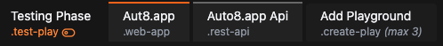
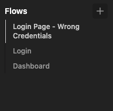
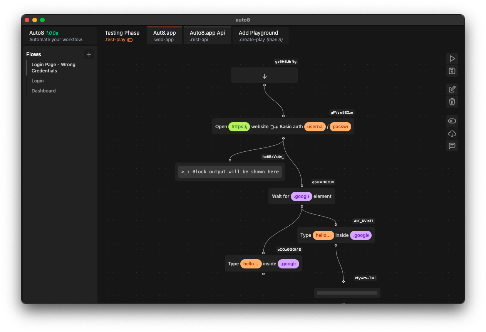

Automate your suite.
Write suite of tests that can be tested by everyone in your team (Developers, QA, VQA, and UAT).
Release Notes - In Progress
Closed Alpha
The app that enhances web development and testing experience for everyone.
Roadmap - In Progress

Plays
Add plays to manage as many flows to quickly test and automate a suite.
Flows
Add flows to create a flow tree to manage all of your actions.

Writing Tests Shouldn't be Hard
Focus on what matters instead writing tests over, and over again. Modify your app's flow from the frontend, collaborate, and automate.
